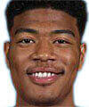
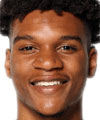

Estatura: 2,21
Peso: 109kg
Edad: 26 años
Años en la NBA: 5 año
Procedente de: España

Estatura: 2,03
Peso: 104kg
Edad: 24 años
Años en la NBA: 2 años
Procedente de: Gonzaga
Estatura: 2,06
Peso: 100kg
Edad: 26 años
Años en la NBA: 4 años
Procedente de: Utah

Estatura: 2,08
Peso: 93kg
Edad: 20 años
Años en la NBA: Novato
Procedente de: NBA G-League